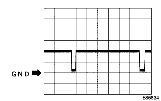

"Wide Multi AV Station" System ECU terminal array |
| Terminal number | Terminal symbol | Input and output | Tester connection Plus ← → Minus | item | Measurement conditions | standard | Problem symptoms in non -standard O: At the time of disconnection S: Body and short circuit |
|---|---|---|---|---|---|---|---|
| 1 | FR + | output | A1 ← → A7 | Waveform | During voice output | A waveform synchronized with the audio is output | Front speaker ASSY No.1 (RH) and speaker ASSY FR No.2 (RH) does not appear |
| 2 | FL + | output | A2 ← → A7 | Waveform | During voice output | A waveform synchronized with the audio is output | Front speaker ASSY No.1 (LH) and speaker ASSY FR No.2 (LH) does not appear |
| 3 | Ah | input | A3 ← → A7 | Voltage | IG Switch ACC | 10-14V | O: The system does not work S: runs out of fuse |
| 4 | B | input | A4 ← → A7 | Voltage | Always | 10-14V | O: The system does not work S: runs out of fuse |
| 5 | FR | output | A5 ← → A7 | Waveform | During voice output | A waveform synchronized with the audio is output | Front speaker ASSY No.1 (RH) and speaker ASSY FR No.2 (RH) does not appear |
| 6 | FL- | output | A6 ← → A7 | Waveform | During voice output | A waveform synchronized with the audio is output | Front speaker ASSY No.1 (LH) and speaker ASSY FR No.2 (LH) does not appear |
| 7 | picture | - | A7 ← → Body Earth | Conduction | Always | There is an conductor | O: Noise increased |
| 8 | Ant T | output | A8 ← → A7 | Voltage | Radio (AM/FM) receiving | 10-14V | AM/FM Reception sensitivity poor |
| 10 | L + | input | A10 ← → A7 | Voltage | Head lamps Dimaswitch on | 10-14V | O: does not switch to night screen S: runs out of fuse |
| Terminal number | Terminal symbol | Input and output | Tester connection Plus ← → Minus | item | Measurement conditions | standard | Problem symptoms in non -standard O: At the time of disconnection S: Body and short circuit |
|---|---|---|---|---|---|---|---|
| 1 | R + | output | B1 ← → A7 | Waveform | During voice output | A waveform synchronized with the audio is output | Speaker ASSY RR (RH) does not appear |
| 2 | RL + | output | B2 ← → A7 | Waveform | During voice output | A waveform synchronized with the audio is output | Speaker ASSY RR (LH) does not appear |
| 3 | R -っ | output | B3 ← → A7 | Waveform | During voice output | A waveform synchronized with the audio is output | Speaker ASSY RR (RH) does not appear |
| 6 | RL ー | output | B6 ← → A7 | Waveform | During voice output | A waveform synchronized with the audio is output | Speaker ASSY RR (LH) does not appear |
| Terminal number | Terminal symbol | Input and output | Tester connection Plus ← → Minus | item | Measurement conditions | standard | Problem symptoms in non -standard O: At the time of disconnection S: Body and short circuit |
|---|---|---|---|---|---|---|---|
| 6 | Untreated | input | C6 ← → A7 | Voltage | At the time of audio audio output | 3.5V or more | O: Pop sound generation S: Not voice from the speaker |
| Terminal number | Terminal symbol | Input and output | Tester connection Plus ← → Minus | item | Measurement conditions | standard | Problem symptoms in non -standard O: At the time of disconnection S: Body and short circuit |
|---|---|---|---|---|---|---|---|
| 1 | I ゔ + | input | D1 ← → A7 | Waveform | Navi guidance audio output | A waveform synchronized with the audio is output | Navi guidance noise |
| 2 | Evie | input | D2 ← → A7 | Waveform | Navi guidance audio output | A waveform synchronized with the audio is output | Navi guidance noise |
| 4 | CMP + | output | D4 ← → A7 | Waveform | FM character multiple broadcast screen output | Waveform 4 | FM character multiple broadcast display is not displayed |
| 5 | CMP - | output | D5 ← → A7 | Waveform | FM character multiple broadcast screen output | Waveform 4 | FM character multiple broadcast display is not displayed |
| Terminal number | Terminal symbol | Input and output | Tester connection Plus ← → Minus | item | Measurement conditions | standard | Problem symptoms in non -standard O: At the time of disconnection S: Body and short circuit |
|---|---|---|---|---|---|---|---|
| 1 | PKB | input | F1 ← → A7 | Voltage | Pull the parking brake lever | 1V or less | O: The TV video does not appear even during the stop |
| 3 | SPD | input | F3 ← → A7 | Voltage | Run at 5km/h or higher/h | 9V or more ← → 1V Repeat or less | A TV video appears even while driving |
| 5 | Ve V | input | F5 ← → A7 | Voltage | Shift lever R range | 10-14V | Even if you retreat, your car position mark will move forward |
| Terminal number | Terminal symbol | Input and output | Tester connection Plus ← → Minus | item | Measurement conditions | standard | Problem symptoms in non -standard O: At the time of disconnection S: Body and short circuit |
|---|---|---|---|---|---|---|---|
| 1 | VR | - | H1 ← → H6 | Conduction | IG switch off | There is an conductor | Normal (screen noise slightly increased) |
| 2 | R | input | H2 ← → H1 | Waveform | Navigation screen or back guide monitor screen | Waveform 2 | The navigation screen is light blue |
| 3 | B | input | H3 ← → H1 | Waveform | Navigation screen or back guide monitor screen | Waveform 2 | The navigation screen is yellow |
| 5 | TX + | Input and output | - | - | Service inspection | - | O: Navi screen does not appear S: The system does not work |
| 6 | VG | - | H6 ← → Body Earth | Conduction | IG switch off | There is an conductor | Normal (screen noise slightly increased) |
| 7 | G | input | H7 ← → H1 | Waveform | Map screen or back guide monitor screen | Waveform 2 | The navigation screen is pink |
| 8 | Symm c | input | H8 ← → H1 | Waveform | Navigation screen or back guide monitor screen | Waveform 1 | O: Navi screen synchronization is disturbed and intense S: Navi screen synchronously disturbed |
| 10 | TX | Input and output | - | - | Service inspection | - | O: Navi screen does not appear S: The system does not work |
| Terminal number | Terminal symbol | Input and output | Tester connection Plus ← → Minus | item | Measurement conditions | standard | Problem symptoms in non -standard O: At the time of disconnection S: Body and short circuit |
|---|---|---|---|---|---|---|---|
| 1 | TVD2 | output | I1 ← → A7 | Voltage | During TV screen | 1V or less ← → 3V or more depending on the reception state | TV reception sensitivity decreased |
| 2 | TVD1 | output | I2 ← → A7 | Voltage | During TV screen | 1V or less ← → 3V or more depending on the reception state | TV reception sensitivity decreased |
| 3 | TV + | output | I3 ← → A7 | Voltage | During TV screen | 10-14V | O: TV reception sensitivity decreased S: runs out of fuse |
| 4 | DG D | input | I4 ← → A7 | Conduction | Always | There is an conductor | Normal (noise increase) |
| 5 | TV -Ant | input | I5 ← → Body Earth | Conduction | Always | Without conduction | TV reception sensitivity decreased |
Osciroscope waveform
|  |
Waveform 1
| item | Content |
|---|---|
| Measuring terminal | Sync ← → VR |
| Instrument set | 500mv/div, 10μs/div |
| Measurement conditions | Navigation screen or back guide monitor screen |
 |
Waveform 2
| item | Content |
|---|---|
| Measuring terminal |
|
| Instrument set | 200mv/div, 10μs/div |
| Measurement conditions | Navigation screen or back guide monitor screen |
Waveform 4
| item | Content |
|---|---|
| Measuring terminal |
|
| Instrument set | 1V/Div, 50μs/Div |
| Measurement conditions | FM character multiple broadcast screen output |

| Terminal number | Terminal symbol | Input and output | Tester connection Plus ← → Minus | item | Measurement conditions | standard | Problem symptoms in non -standard O: At the time of disconnection S: Body and short circuit |
|---|---|---|---|---|---|---|---|
| 3 | SLD1 | - | A3 ← → Body Earth | Conduction | Always | There is an conductor | O: Navi guide voice noise slightly increased |
| 5 | SPD | input | - | - | Navi Inspection-Vehicle Signal & Sensor Inspection (SPD signal status) | - | All switch operations can be operated while driving |
| 6 | CMP - | input | A6 ← → A17 | Waveform | FM character multiple broadcast screen output | Waveform 4 | FM character multiple broadcast display is not displayed |
| 7 | CMP + | input | A7 ← → A17 | Waveform | FM character multiple broadcast screen output | Waveform 4 | FM character multiple broadcast display is not displayed |
| 9 | + B | input | A9 ← → A17 | Voltage | Always | 10-14V | O: The map screen does not appear S: runs out of fuse |
| 12 | ゔ ゔ ゔ ゔ ゔ ゔ ゔ ゔ ゔ | output | A12 ← → A17 | Waveform | Navi guidance audio output | A waveform synchronized with the audio is output | Navi guidance noise |
| 13 | Voyy | output | A13 ← → A17 | Waveform | Navi guidance audio output | A waveform synchronized with the audio is output | Navi guidance noise |
| 14 | Ve V | input | - | - | Navi vehicle signal inspection | - | Deterioration of navigation accuracy |
| 16 | RSG | - | A16 ← → A17 | Conduction | IG switch off | There is an conductor | Normal (screen noise slightly increased) |
| 17 | G -d | - | A17 ← → Body Earth | Conduction | Always | There is an conductor | Normal (noise increase) |
| 18 | Ah | input | A18 ← → A17 | Voltage | IG Switch ACC | 10-14V | O: The map screen does not appear S: runs out of fuse |
| Terminal number | Terminal symbol | Input and output | Tester connection Plus ← → Minus | item | Measurement conditions | standard | Problem symptoms in non -standard O: At the time of disconnection S: Body and short circuit |
|---|---|---|---|---|---|---|---|
| 1 | VR | - | B1 ← → Body Earth | Conduction | IG switch off | There is an conductor | Normal (screen noise slightly increased) |
| 2 | R | output | B2 ← → B1 | Waveform | Navigator screening | Waveform 2 | The navigation screen is light blue |
| 3 | B | output | B3 ← → B1 | Waveform | Navigator screening | Waveform 2 | The navigation screen is yellow |
| 5 | TX + | Input and output | - | - | Service inspection | - | O: Navi screen does not appear S: The system does not work |
| 6 | VG | - | B6 ← → Body Earth | Conduction | IG switch off | There is an conductor | Normal (screen noise slightly increased) |
| 7 | G | output | B7 ← → B1 | Waveform | Navigator screening | Waveform 2 | The navigation screen is pink |
| 8 | Symm c | output | B8 ← → B1 | Waveform | Navigator screening | Waveform 1 | O: Navi screen synchronization is disturbed and intense S: Navi screen synchronously disturbed |
| 10 | TX | Input and output | - | - | Service inspection | - | O: Navi screen does not appear S: The system does not work |
| Terminal number | Terminal symbol | Input and output | Tester connection Plus ← → Minus | item | Measurement conditions | standard | Problem symptoms in non -standard O: At the time of disconnection S: Body and short circuit |
|---|---|---|---|---|---|---|---|
| 1 | SW | - | C1 ← → A17 | Conduction | Always | There is an conductor |
|
| 3 | Mi C + | input | C3 ← → C5 | Waveform | During voice input | A waveform synchronized with the audio is output |
|
| 4 | Mt | output | C4 ← → A17 | Voltage | IG Switch ACC | 5V |
|
| 5 | Not | - | C5 ← → Body Earth | Conduction | Always | There is an conductor |
|
| 6 | SG D | - | C6 ← → Body Earth | Conduction | Always | There is an conductor |
|
| 7 | S -no | - | C7 ← → Body Earth | Conduction | Always | There is an conductor |
|
| 8 | SW + | input | C8 ← → A17 | Voltage | Pressing the voice recognition switch without pressing → Pressing | 5V → 0-0.5V | Voice recognition switch does not work |
Osciroscope waveform
Waveform 1
| item | Content |
|---|---|
| Measuring terminal | Sync ← → VR |
| Instrument set | 500mv/div, 10μs/div |
| Measurement conditions | During map screen drawing |
|
Waveform 2
| item | Content |
|---|---|
| Measuring terminal |
|
| Instrument set | 200mv/div, 10μs/div |
| Measurement conditions | During map screen drawing |
Waveform 4
| item | Content |
|---|---|
| Measuring terminal |
|
| Instrument set | 1V/Div, 50μs/Div |
| Measurement conditions | FM character multiple broadcast screen output |
 reference)
reference)